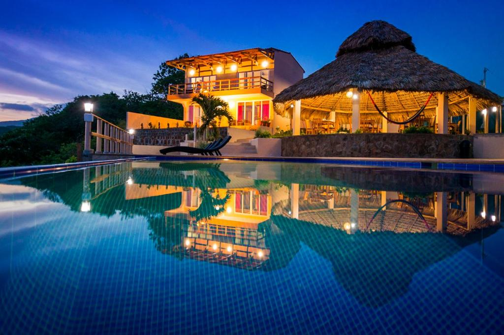

Bienvenido a Hotel Los Mangos

En el corazón de la naturaleza, Hotel Los Mangos es un refugio tropical diseñado para ofrecerle
una experiencia de lujo y relajación. Rodeado de exuberantes jardines y con acceso directo a playas paradisíacas,
nuestro hotel combina comodidad, elegancia y atención de primer nivel.
Hotel Los Mangos abrió sus puertas a los turistas este de mayo 2014, operado por Epic Surfing Adventures.
Los Mangos fue creado con el propósito de ofrecer a sus clientes el lugar perfecto para su estadía
lujosa, ya que el Hotel está situado en frente de Punta Mango en donde encuentra una de las mejores puntas de surf en El Salvador.